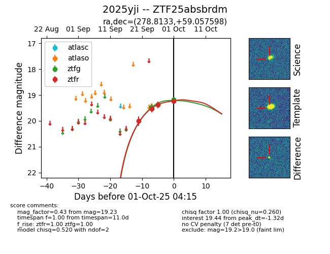
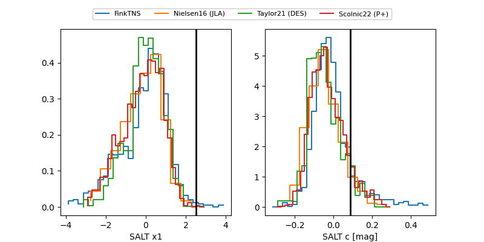

FINK: ZTF25absbrdm
Lasair: ZTF25absbrdm
ALeRCE: ZTF25absbrdm
TNS: 2025yji
YSE: 2025yji
ZTF25absbrdm (ztf,fink)
2025yji (tns,yse)
equatorial (ra, dec) = (278.8133,+59.05760)
galactic (l, b) = (88.4505,+25.04816)


last ztfg=19.17, ztfr=19.23
3 ztfg, 4 ztfr detections